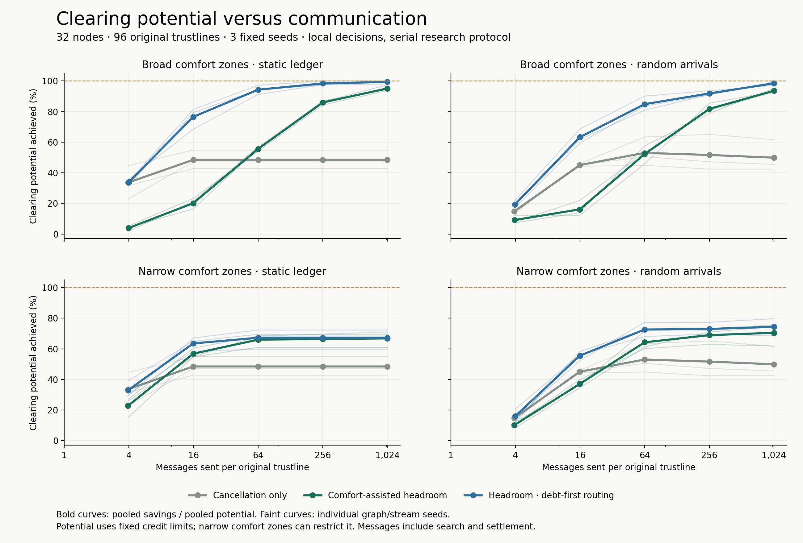
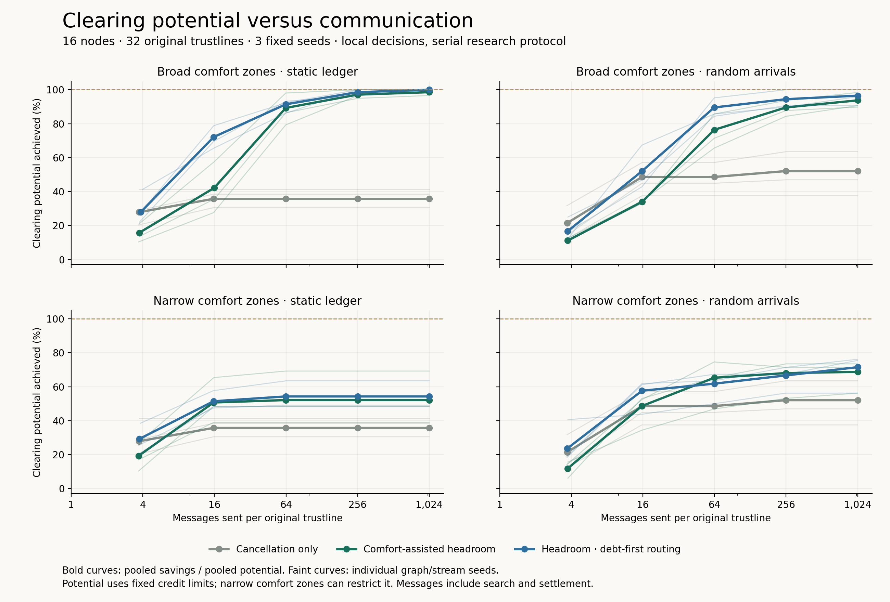

20 October 2026 · Fixed synthetic experiment · 360 curve runs; 48 additional fresh-seed validation runs
Each participant checks its own balances and bilateral preferences. A helper may increase exposure only when the actual app comfort rule permits it. Every settled cycle reduces total absolute debt, preserves every node's net position, and makes no relationship less comfortable. The cancellation control allows only debt decreases.


Each line uses five prospectively fixed message allowances: 4, 16, 64, 256 and 1,024 per original undirected trustline. Horizontal positions are actual messages sent, not allowance. Zero-balance helper links count as trustlines. Thick curves pool savings and potential across three seeds; thin curves retain individual outcomes. No smoothing or clipping of negative savings.
Poisson arrivals at rate 1 per time unit through time 40, uniformly sampled original trustlines, signed amounts ±1, ±2 or ±3. The same graph and offered stream are reused for every policy and budget. Clearing service credits accrue linearly with simulated time; unused credits carry forward. Each service slot fully completes before its next external transaction. There is one final bounded service slot at time 40 and no unbudgeted clearing afterward.
All hard grants are 10,000 units. Initial gross debt plus absolute offered volume is below that bound, so all methods and the no-clearing reference accept every offered transaction. Blocked count and value are still recorded and asserted to be zero. This isolates clearing effectiveness from admission differences.
Replay the accepted transaction stream on the initial signed ledger without clearing to obtain reference gross debt D. An offline min-cost flow computes minimum gross debt D* under the same hard grants and final node net positions. Clearing potential is D−D*. The plotted fraction is (D−actual final debt)/(D−D*). This measures final-snapshot savings; cumulative historical cycle reductions are a separate quantity because arriving transactions can net differently after prior clearing.
Broad zones coincide with the credit limits. Narrow zones use independently sampled endpoint half-widths 1, 3 or 6, with their shared intersection and bilateral assistance opt-in. For narrow zones the plotted denominator is a relaxed hard-limit ceiling, not the exact preference-constrained reachable optimum. Both balance directions and explicitly consented zero-balance helper channels are available; this differs from the original cancellation-only Cycles benchmark's original-edge capacity model.
With fixed feasible bounds, min-cost flow optimality is characterized by the absence of improving residual cycles. Those cycles can require undoing earlier choices or increasing helper balances, which is why more cancellation-only searches need not attain the optimum. See MIT's cycle-cancellation notes. This finite randomized search does not itself provide an optimality certificate; the independent offline reference does.
Theoretical inference for the original uniformly shuffled policy: on a static integer ledger with broad zones equal to hard bounds, bilateral helper consent, fair repeated initiation, ideal full-support random choices and enough quota to explore and settle any simple cycle, each improving residual cycle has a positive chance of discovery. Gross debt strictly decreases in integer steps, giving almost-sure eventual optimality. This supplies no deterministic finite-message guarantee, useful convergence rate or distributed termination certificate. It does not automatically extend to debt-first ordering, narrow path-dependent comfort constraints, ongoing arrivals, or a finite seeded PRNG run.
| Graph | Comfort | Mode | Policy | Actual messages/line | Potential achieved% | Final debt | Discomfort | Helper cycles | Accepted/offered |
|---|---|---|---|---|---|---|---|---|---|
| medium32 | broad | arrivals | Cancellation only | 1023.90 | 49.90 | 727 | 0 | 0 | 135/135 |
| medium32 | broad | arrivals | Comfort-assisted headroom | 1023.92 | 93.59 | 502 | 0 | 365 | 135/135 |
| medium32 | broad | arrivals | Headroom · debt-first routing | 1023.92 | 98.45 | 477 | 0 | 269 | 135/135 |
| medium32 | broad | static | Cancellation only | 1023.90 | 48.47 | 688 | 0 | 0 | 0/0 |
| medium32 | broad | static | Comfort-assisted headroom | 1023.92 | 95.11 | 459 | 0 | 285 | 0/0 |
| medium32 | broad | static | Headroom · debt-first routing | 1023.90 | 99.39 | 438 | 0 | 141 | 0/0 |
| medium32 | narrow | arrivals | Cancellation only | 1023.90 | 49.90 | 727 | 347 | 0 | 135/135 |
| medium32 | narrow | arrivals | Comfort-assisted headroom | 1023.90 | 70.49 | 621 | 206 | 149 | 135/135 |
| medium32 | narrow | arrivals | Headroom · debt-first routing | 1023.92 | 74.37 | 601 | 201 | 139 | 135/135 |
| medium32 | narrow | static | Cancellation only | 1023.90 | 48.47 | 688 | 316 | 0 | 0/0 |
| medium32 | narrow | static | Comfort-assisted headroom | 1023.90 | 66.80 | 598 | 162 | 86 | 0/0 |
| medium32 | narrow | static | Headroom · debt-first routing | 1023.90 | 67.21 | 596 | 177 | 63 | 0/0 |
| small16 | broad | arrivals | Cancellation only | 1023.73 | 52.08 | 269 | 0 | 0 | 106/106 |
| small16 | broad | arrivals | Comfort-assisted headroom | 1023.77 | 93.75 | 209 | 0 | 149 | 106/106 |
| small16 | broad | arrivals | Headroom · debt-first routing | 1023.73 | 96.53 | 205 | 0 | 135 | 106/106 |
| small16 | broad | static | Cancellation only | 1023.73 | 35.71 | 285 | 0 | 0 | 0/0 |
| small16 | broad | static | Comfort-assisted headroom | 1023.71 | 98.57 | 197 | 0 | 75 | 0/0 |
| small16 | broad | static | Headroom · debt-first routing | 1023.75 | 100.00 | 195 | 0 | 65 | 0/0 |
| small16 | narrow | arrivals | Cancellation only | 1023.73 | 52.08 | 269 | 134 | 0 | 106/106 |
| small16 | narrow | arrivals | Comfort-assisted headroom | 1023.73 | 68.75 | 245 | 101 | 65 | 106/106 |
| small16 | narrow | arrivals | Headroom · debt-first routing | 1023.73 | 71.53 | 241 | 102 | 62 | 106/106 |
| small16 | narrow | static | Cancellation only | 1023.73 | 35.71 | 285 | 131 | 0 | 0/0 |
| small16 | narrow | static | Comfort-assisted headroom | 1023.71 | 52.14 | 262 | 99 | 24 | 0/0 |
| small16 | narrow | static | Headroom · debt-first routing | 1023.75 | 54.29 | 259 | 95 | 23 | 0/0 |
Debt, discomfort, helper cycles and accepted/offered counts are totals across three seeds; messages/line is the mean. Static rows have no external offers.
The separate debt-first variant shuffles candidates as before, then prioritizes neighbours whose local balance would decrease. Helper edges remain eligible. Its 120 extension runs appear in the curves above; those original seeds are descriptive, not fresh validation.
A prospectively frozen check used 32 nodes, 96 trustlines, fresh seeds 401–403, both comfort profiles, both arrival modes, and budgets 256 and 1,024. The high-budget gate failed: pooled snapshot savings changed by +4.76% against a required gain of at least 5%. Actual message, JSON-byte and runtime ratios were 1.000, 1.028 and 1.013; each ceiling was 1.25. Every profile/mode cell also had to avoid a savings regression greater than 5%. Runtime has only one sample per run.
| Comfort | Mode | Original headroom: potential achieved | Debt-first: potential achieved |
|---|---|---|---|
| broad | static | 95.61% | 98.85% |
| broad | arrivals | 94.26% | 98.52% |
| narrow | static | 75.19% | 79.39% |
| narrow | arrivals | 74.63% | 79.07% |
The candidate is retained as a measured tradeoff and is not promoted over the original headroom policy. See all follow-up results and the full gate and independent follow-up audit.
Ten new focused tests and 16 existing comfort tests pass; the routing variant adds six focused tests and seven runner checks. The separate auditor replays all transactions and cycle changes, checks hard limits and comfort consent, and certifies the offline optima using residual-cycle conditions. See independent audit.
This is a reliable, serialized research simulator with path-bearing tokens, staged prepare/commit/cleanup, and no message loss, crash recovery or concurrent arrivals during settlement. A simulator chooses initiators; local actors make routing and acceptance decisions. It is not the app's neighbour-private hashlock protocol. The actual app's bilateral edge-comfort admission rule is reused, but discovery is a new research policy: it may start with a debt reduction that is comfort-neutral, whereas the app's discovery has stricter origin-comfort improvement checks. No app code, tokens or demo data changed.
Communication counts actual compact JSON application messages for discovery and settlement. Initial ledger/preference distribution, external transaction admission transport, network headers and acknowledgements absent from this model are excluded. The auditor checks aggregate and per-kind count/byte consistency against the frozen encoder; complete payload wire logs were not retained for independent re-encoding. Runtime is a single illustrative sample per run; it is not the plotted endpoint or a production latency measurement.
Python 3.12.14; NetworkX 3.5. All implementation, plan and workload hashes are in comparison.json. The reference uses NetworkX's network simplex solver, not a measurement of the Cycles hosted service.